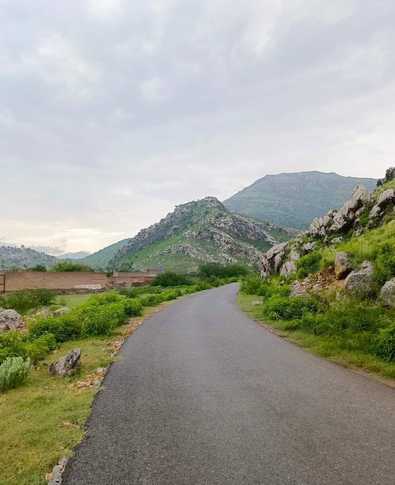
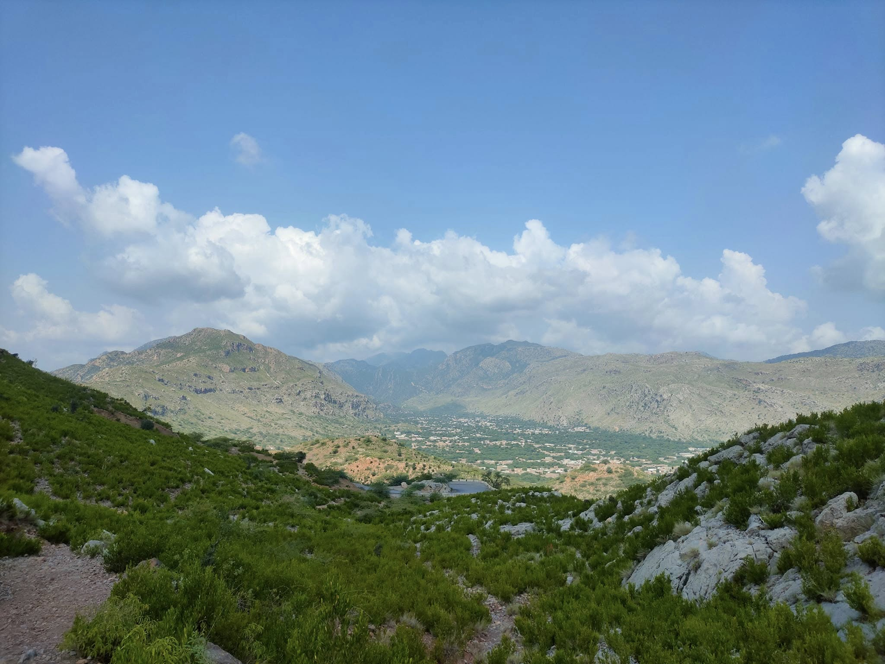
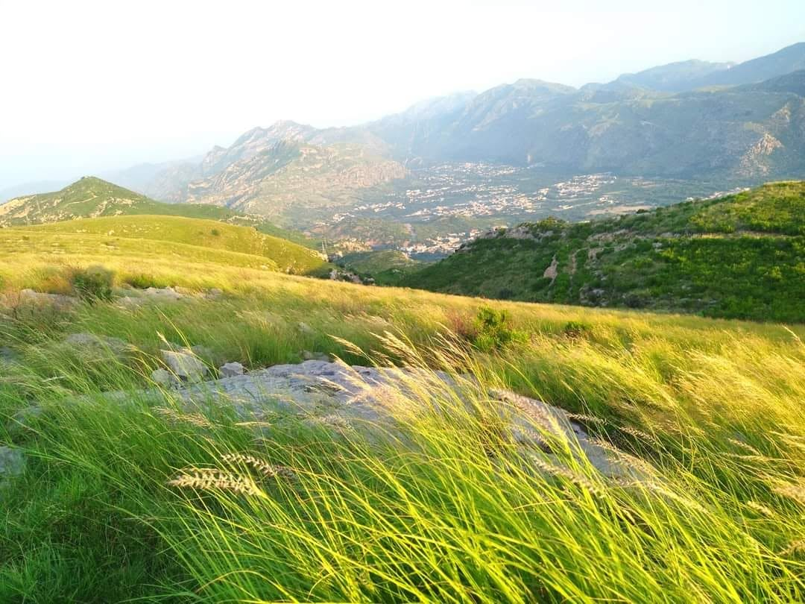

01 · The source
Close to the ground.
Darra Adam Khel gives our work its direction, its perspective, and its character.
A visual study of the ground below, the road ahead, and the people who keep Khaqan Coal Company moving.
These illustrated scenes are a visual expression of Khaqan’s world — created for the website until your own photographs are ready to take their place.
Darra Adam Khel gives our work its direction, its perspective, and its character.
Clear coordination connects the source to the people and places that rely on it.
Coal is the product, but trust is the material we work hardest to build.
These authentic reference assets add scale and texture to the illustrated visual story.


Photographs from the hills, roads, and mine country that shape Khaqan Coal Company every day.




When you are ready, replace these illustrated frames with real photographs of your mine, team, trucks, yard, and hometown. The layout is already prepared for them.
Explore how our operations and community are connected.